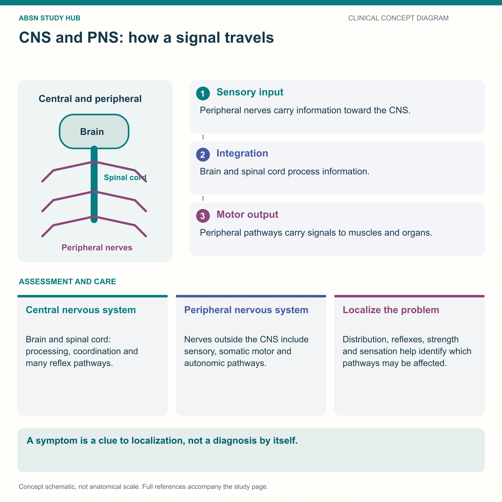

The anatomy + the assessment that every other neuro page stands on
This is the base camp page for the whole neuro batch. Everything drawn here — the lobes, the cranial nerves, one neuron with its myelin, the synapse, the cord in cross-section — gets re-used by Alzheimer's, Parkinson's, MS and the rest, so the other pages point back here instead of redrawing the basics. Learn two things above all else: where things live in the nervous system, and that a change in level of consciousness is the earliest and most sensitive sign that a brain is in trouble.
📄 Simple Nursing original — opens in Drive →
Lobes, what each one does, and the one split that sorts every neuro disease.

Every other neuro page in this batch refers back to this drawing rather than repeating it. Learn the four lobe colors here and the rest of the batch gets easier.
Personality, judgment, impulse control, planning, and voluntary movement from the motor strip.
Damage here shows up as a personality change before anything else — disinhibition, poor safety awareness, apathy. Families notice it long before a scan does.
Touch, pain, temperature, pressure and knowing where your body is in space.
Damage → can't identify an object placed in the hand with eyes shut, neglects one side of the body, can't tell hot from cold. Big burn and pressure-injury risk.
Hearing, smell, language comprehension, and the hippocampus — where new short-term memories are laid down.
That last point is the whole reason Alzheimer's takes short-term memory first: the hippocampus sits inside the temporal lobe and it degenerates early.
Vision. The visual cortex is at the very back of the head.
A blow to the back of the head can cause visual changes even though the eyes themselves are perfectly fine. Occipital stroke → homonymous hemianopsia (same-side visual field loss in both eyes).
Balance, coordination, smooth gait, fine motor control. It doesn't start movement — it polishes it.
Cerebellar signs: wide-based staggering gait, intention tremor (worse as the hand nears the target), can't do rapid alternating movements, falls toward the affected side. This is what alcohol hits first.
Midbrain · pons · medulla. Runs breathing, heart rate, blood pressure, swallowing, coughing, gagging, vomiting and the sleep–wake switch.
Damage here is lethal in a way that cortical damage is not — a person can lose a lobe and live; nobody lives without a medulla.
| BROCA'S (expressive) | WERNICKE'S (receptive) | |
|---|---|---|
| Where | Frontal lobe (front) | Temporal lobe (back) |
| Can they understand you? | YES | NO |
| What their speech sounds like | Halting, few words, effortful, correct meaning | Fluent, normal rhythm, words are nonsense |
| Do they know something's wrong? | Yes — and it is deeply frustrating | Often no — which looks like confusion |
| How you help | Yes/no questions, picture board, give time, never finish their sentences | Short simple sentences, gestures, demonstrate, one idea at a time |
This single split sorts the whole batch. Ask “is the lesion inside the brain/cord, or outside it?” and half the exam question answers itself.
CNS myelin is made by oligodendrocytes and barely regenerates → MS damage accumulates and disability is usually permanent between relapses.
PNS myelin is made by Schwann cells, which can regenerate → Guillain-Barré patients typically recover, slowly, from the head down.
Cranial nerves, one neuron, one synapse, one spinal cord — the four drawings the rest of the batch reuses.
Numbered top to bottom in the order they leave the brain. You do not need all twelve at the bedside — you need the handful in the next card, cold.
On Old Olympus' Towering Tops A Finn And German Viewed A Hop.
Olfactory · Optic · Oculomotor · Trochlear · Trigeminal · Abducens · Facial · Acoustic (vestibulocochlear) · Glossopharyngeal · Vagus · Accessory · Hypoglossal
Osmosis turned the sensory/motor/both mnemonic directly above into a music video. Same twelve nerves, same order, but it sticks the way a tune sticks.
This one drawing serves four pages. MS destroys the purple sheath inside the CNS; Guillain-Barré destroys it in peripheral nerves; myasthenia gravis attacks the far right end where the terminal meets muscle.
A myelinated nerve conducts by having the impulse jump from node to node — fast and cheap. Strip the myelin and the signal has to crawl along the whole membrane, or dies out entirely.
That is why demyelinating disease produces weakness, numbness, double vision and clumsiness rather than pain — it is a conduction problem, not an inflammation-of-the-muscle problem.
Almost every neuro drug you will give works somewhere on this picture — replace the transmitter, block its breakdown, block its reuptake, or block the receptor.
| Transmitter | Normal job | When it goes wrong |
|---|---|---|
| Dopamine | Smooth, automatic movement · reward | LOW in Parkinson's (substantia nigra dies) · too high = psychosis |
| Acetylcholine (ACh) | Muscle contraction at the NMJ · memory | LOW in Alzheimer's · receptors blocked in myasthenia gravis · relatively HIGH in Parkinson's because dopamine has fallen |
| GABA | The brain's brakes — inhibition | Too little = seizures. Benzodiazepines and many antiseizure drugs boost GABA. |
| Serotonin | Mood, sleep, appetite | Low = depression · too much = serotonin syndrome |
| Norepinephrine | Alertness, fight-or-flight | Low = fatigue/low mood · high = tachycardia, hypertension |
Note the inversion students get wrong: in the BRAIN the gray matter is on the outside; in the CORD the gray is on the inside.
| UPPER motor neuron (brain + cord) | LOWER motor neuron (anterior horn → muscle) | |
|---|---|---|
| Tone | Increased — spastic, stiff | Decreased — flaccid, floppy |
| Reflexes | Brisk / hyperreflexia | Absent / hyporeflexia |
| Muscle bulk | Preserved early | Wasting + fasciculations (twitching) |
| Classic example | Stroke, MS, cord injury above the lesion | Guillain-Barré, polio, nerve root injury |
Level of consciousness first, then pupils, then motor. Compare sides and compare to the last check.
If the LOC has changed, you have a neuro problem until proven otherwise.
Pupils, vital signs and posturing are all later signs. A patient who is a little more drowsy, a little slower to answer, or newly “just not themselves” has already declared a change — do not wait for a dilated pupil or a blood-pressure change to act.
Report it as a comparison, not an adjective: “At 08:00 she told me her name and the year; at 12:00 she only opens her eyes to voice and does not answer questions.”
Person → place → time → situation. Orientation is lost in that order and comes back in reverse, so “oriented ×2” tells you person and place are intact and time and situation are not.
Ask open orientation questions (“What year is it?”), not leading ones (“It's 2026, isn't it?”) — a leading question hands the patient the answer.
Chart the size in millimeters and whether each pupil reacts. “Pupils okay” is not an assessment — a number you can compare to the last shift is.
Never chart a pupil change and “keep watching”. It is a report-immediately finding.
If posturing appears at all, the injury is deep. If flexion (decorticate) changes to extension (decerebrate), the patient is getting worse — escalate.
| EYE OPENING (E) | VERBAL (V) | MOTOR (M) |
|---|---|---|
| 4 Spontaneous | 5 Oriented | 6 Obeys commands |
| 3 To speech | 4 Confused conversation | 5 Localizes pain |
| 2 To pain | 3 Inappropriate words | 4 Withdraws from pain |
| 1 None | 2 Incomprehensible sounds | 3 Abnormal FLEXION (decorticate) |
| 1 None | 2 Abnormal EXTENSION (decerebrate) | |
| 1 None |
Best possible 15 · worst possible 3 — there is no zero, because being present at all scores 1 in each column.
A GCS of 8 or less means the patient cannot protect their own airway → prepare for intubation.
Never wait for Cushing's triad. By the time all three appear, herniation is already happening — the LOC change came hours earlier.
The rules that apply to every chronic neuro condition, and where to go from here.
Never jump straight to the wheelchair because it is faster for staff.
| Condition | Where the damage is | The one-line hook |
|---|---|---|
| Alzheimer's disease | CNS — cortex + hippocampus | Plaques and tangles · short-term memory goes first |
| Dementia vs delirium | Dementia = structural damage · delirium = a treatable insult | Gradual and permanent vs sudden and reversible |
| Parkinson's disease | CNS — substantia nigra (midbrain) | Low dopamine · TRAP · shuffling gait |
| Multiple sclerosis | CNS white matter — myelin | Relapsing-remitting · avoid heat |
| Guillain-Barré syndrome | PNS — peripheral myelin | Ascending paralysis · watch the diaphragm |
Write what you observed and what has changed — not your interpretation.
Weak: “Patient confused, appears worse.”
Strong: “At 0800 orientated ×4, GCS 15, grips equal. At 1200 orientated to person only,
GCS 12 (E3 V4 M5), left grip weaker than right, right pupil 5 mm sluggish, previously 3 mm brisk.
Provider notified 1205.”
These newly drawn concept diagrams consolidate the retired illustration sets. The accompanying study notes and original handout links remain on this page.